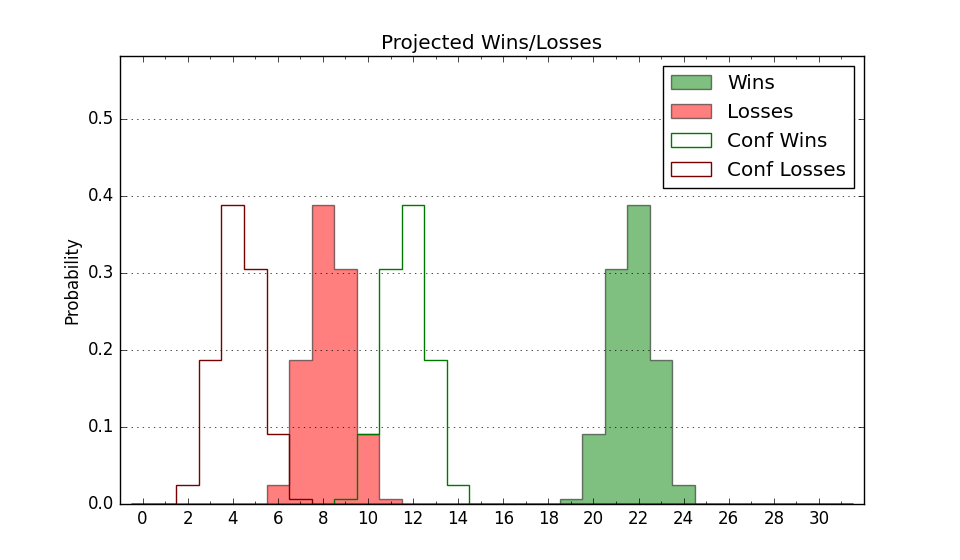

| Home | Game Probabilities | Conferences | Preseason Predictions | Odds Charts | NCAA Tournament |
| City: | San Francisco, California | |
| Conference: | West Coast (2nd)
| |
| Record: | 9-2 (Conf) 19-6 (Overall) | |
| Ratings: | Comp.: 13.7 (64th) Net: 13.7 (65th) Off: 110.7 (83rd) Def: 97.0 (48th) SoR: 23.9 (68th) |
| Remaining | ||||||
|---|---|---|---|---|---|---|
| Date | Opponent | Win Prob | Pred. | |||
| 2/17 | @ Loyola Marymount (164) | 67.9% | W 72-67 | |||
| 2/20 | @ Saint Mary's (17) | 17.2% | L 59-69 | |||
| 2/24 | Pepperdine (216) | 91.8% | W 80-63 | |||
| 2/29 | Gonzaga (22) | 46.6% | L 74-75 | |||
| 3/2 | @ Santa Clara (105) | 50.5% | W 74-73 | |||
| Previous | Game Score | |||||
| Date | Opponent | Win Prob | Result | Off | Def | Net |
| 11/9 | St. Francis PA (348) | 98.4% | W 84-52 | -0.7 | 4.5 | 3.8 |
| 11/12 | @Boise St. (46) | 28.3% | L 58-63 | -12.0 | 16.4 | 4.4 |
| 11/17 | (N) Grand Canyon (51) | 44.7% | L 72-76 | -9.8 | 1.8 | -8.0 |
| 11/19 | (N) DePaul (291) | 92.5% | W 70-54 | -8.9 | 3.9 | -5.0 |
| 11/22 | Fort Wayne (161) | 87.4% | W 76-60 | 1.6 | 7.9 | 9.5 |
| 11/26 | (N) Minnesota (82) | 57.4% | W 76-58 | 22.1 | 10.7 | 32.8 |
| 12/3 | @Arizona St. (125) | 56.3% | L 61-72 | -17.8 | 0.6 | -17.3 |
| 12/6 | @Vanderbilt (219) | 76.9% | W 73-60 | 11.0 | 6.9 | 17.9 |
| 12/11 | New Orleans (337) | 97.8% | W 85-72 | -3.0 | -13.7 | -16.7 |
| 12/13 | Seattle (120) | 80.6% | W 62-59 | -9.7 | 5.1 | -4.7 |
| 12/16 | (N) Utah St. (43) | 40.6% | L 53-54 | -24.8 | 25.3 | 0.5 |
| 12/20 | Northern Arizona (317) | 96.9% | W 91-51 | 19.4 | 10.3 | 29.7 |
| 12/22 | Fresno St. (198) | 90.7% | W 77-57 | 1.4 | 6.1 | 7.5 |
| 12/30 | Mississippi Valley St. (362) | 99.6% | W 92-42 | 29.0 | 3.7 | 32.7 |
| 1/4 | @Pacific (354) | 95.8% | W 92-88 | 2.5 | -27.5 | -24.9 |
| 1/11 | @San Diego (244) | 79.9% | W 83-63 | 13.7 | 10.1 | 23.8 |
| 1/13 | Portland (302) | 96.2% | W 96-69 | 4.0 | -5.3 | -1.3 |
| 1/18 | Loyola Marymount (164) | 87.8% | W 90-74 | 18.3 | -14.1 | 4.2 |
| 1/20 | Saint Mary's (17) | 41.4% | L 60-77 | -7.9 | -16.3 | -24.2 |
| 1/25 | @Gonzaga (22) | 20.4% | L 72-77 | 0.9 | -0.6 | 0.3 |
| 1/27 | @Portland (302) | 88.1% | W 76-64 | -18.3 | 16.0 | -2.3 |
| 2/1 | San Diego (244) | 93.1% | W 95-79 | 7.8 | -12.5 | -4.7 |
| 2/3 | Pacific (354) | 98.7% | W 79-73 | -9.5 | -18.9 | -28.4 |
| 2/8 | @Pepperdine (216) | 76.6% | W 80-74 | 4.7 | -8.8 | -4.2 |
| 2/10 | Santa Clara (105) | 77.6% | W 71-70 | 0.3 | -8.4 | -8.1 |
| Stats & Trends | |||||
|---|---|---|---|---|---|
| Current | Day | Week | Month | Season | |
| Composite | 13.7 | -0.1 | -0.3 | -2.1 | +8.0 |
| Comp Rank | 64 | +1 | +3 | -17 | +30 |
| Net Efficiency | 13.7 | -0.2 | -0.4 | -3.7 | -- |
| Net Rank | 65 | -- | +1 | -25 | -- |
| Off Efficiency | 110.7 | -0.1 | -0.0 | -0.0 | -- |
| Off Rank | 83 | -1 | -5 | -9 | -- |
| Def Efficiency | 97.0 | -0.1 | -0.4 | -3.7 | -- |
| Def Rank | 48 | -- | -6 | -23 | -- |
| SoS Rank | 270 | +11 | +17 | +23 | -- |
| Exp. Wins | 21.7 | +0.2 | +0.3 | -0.3 | +5.0 |
| Exp. Conf Wins | 11.7 | +0.2 | +0.3 | -0.3 | +3.6 |
| Conf Champ Prob | 1.4 | +0.1 | -0.0 | -27.6 | -3.7 |

| Advanced Stats | ||
|---|---|---|
| Stat | Value | Rank |
| Off Eff FG % | 0.546 | 55 |
| Off Ast Ratio | 0.163 | 62 |
| Off ORB% | 0.309 | 83 |
| Off TO Rate | 0.154 | 225 |
| Off FT Ratio | 0.261 | 335 |
| Def Eff FG % | 0.490 | 125 |
| Def Ast Ratio | 0.123 | 46 |
| Def ORB% | 0.215 | 10 |
| Def TO Rate | 0.180 | 24 |
| Def FT Ratio | 0.369 | 276 |